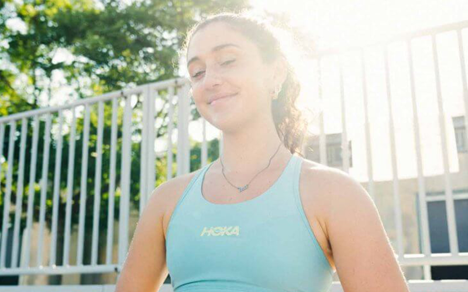
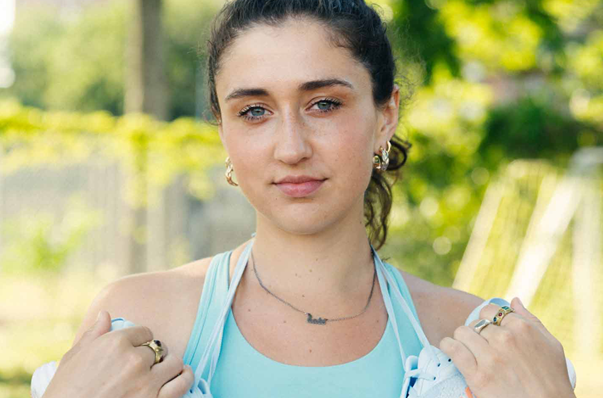
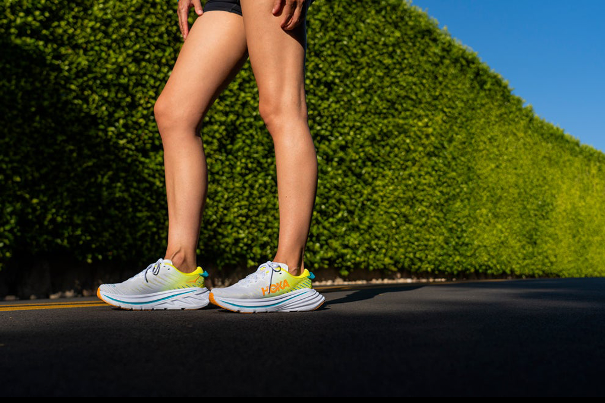

Kate Glavan: Running My First Half Marathon
Kate Glavan tackled her first half marathon this past fall after initially telling herself she never wanted to race. Learn about her experience and why she encourages YOU to sign up for a race too.
-

When I first got into running, I told myself I'd never race. Why? I had played competitive volleyball my whole life — always having coaches and trainers telling me how much to lift and how to structure my fitness regimen. When I initially found running, I never wanted to put the pressure of pace, distance, training, etc. on myself for this new sport.
Something changed in me earlier this year, perhaps it was a stronger sense of self and a confidence to set new goals to work towards with running. I realized that I run a lot, I love it… why not see what my body and mind can accomplish? I told myself I didn't have to set any crazy time goals for this race and beat myself up if I somehow didn't achieve what I had in mind. The idea of working towards a goal, in this instance — getting to the start and finish line of a race — felt really motivating for me, but more importantly racing would give me the perfect opportunity to do something for myself. As soon as I told HOKA I wanted to run the Santa Barbara Half Marathon, I knew this would create a new opportunity for me to learn something about myself.
I was coming off an Achilles injury straight into 8 weeks of training for the SB Half. Not ideal. I was pretty anxious, discouraged, and worried about getting to the start line healthy. Once I was cleared to ease into running from PT, I slowly started to increase my mileage. I focused a lot on recovery and rest — getting 8 hours of sleep, using my foam roller and massage gun, dynamic stretching, strength training, and prioritizing nutrition. I focused on those pillars of the health that I could control because I couldn't control when my Achilles would feel 100% again. I wasn't about to take any chances.
-

During my training, I focused a lot on reflecting on my “why” with running to keep me feeling motivated and grateful for this opportunity. I have a twin brother who has various disabilities. Oftentimes throughout training, I was thinking about how privileged I am to be able-bodied in order to run this race. I kept thinking about how younger me — the one with an eating disorder, health complications, low self-esteem — wouldn't believe that I could even run a mile now. I'm so grateful for how I have grown to work with my body — instead of against it — and learned to take great care of my health.
If you're thinking of signing up for a half marathon or any running race, it is a big promise to yourself which comes with some sacrifices. You may have to tell friends you can't go out on Friday because you have a long run Saturday. You may have to dedicate more time to stretching, cooking, and sleeping than you once did.
You have to do it for you, there will be no one telling you to get up and run 8 miles on a random Wednesday besides yourself. It is a commitment to your future self, but it comes with such great reward. That is all to say, you should do it. So little of what I get from running is about actually stepping on the pavpent or trail. I promise you will learn a lot about yourself in the process of training.
My favorite HOKAs I utilized through training were the Bondi 8, Rincon 3, and Bondi X. The Bondi 8 was useful for my every day and long runs, Rincon 3 was a perfect shoe for speed work, and the Bondi X was my race day shoe with a carbon plate. I've recently been loving the Gaviota 4 and Arahi 6 after learning that I tend to pronate.
-

Kate's race day 'fit included the Bondi X.
Race day went as I expected, which was a huge relief. I did a lot of visualization leading up to the race of what I wanted it to feel and look like. I kept thinking about myself eating breakfast on race day, putting my bib on, wearing my race day outfit, and crossing the finish line to hug my mom. When I finally made it to Santa Barbara and saw the course, I knew I felt ready.
I'd obviously never raced before — I had been doing most of my training runs alone — so it was a totally new ballgame to have spectators cheering me on as I ran. There were so many things to be grateful for as I ran, including my family flying out to watch me, which made the race day experience equally enjoyable and memorable. Hugging my mom at the finish line was a moment that really tied the bow on the experience — I made it, I did it for myself.
Now that I've been able to reflect on the race, I feel like my training, discipline, and preparation helped me cross that finish line. The experience served as a huge steppingstone for believing in myself and having confidence in my running journey — allowing me to dream bigger. I am currently training for my first marathon — Big Sur in 2023 — and really excited to learn even more about myself through this next chapter with HOKA.